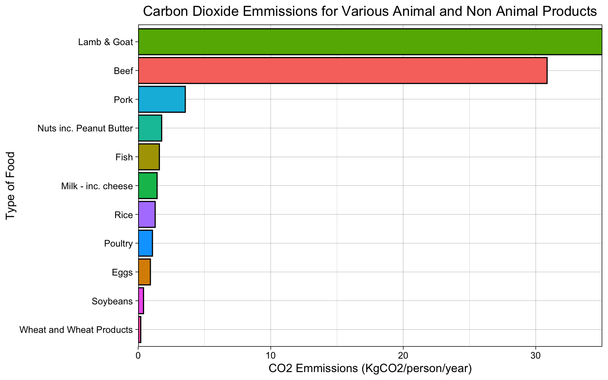

The study analyses data from the Food and Agriculture Organization of the United Nations (FAO) to determine the quantity of produce supplied for consumption of 11 food types for all countries researched. Using CO2 emissions data, the carbon footprint per capita is then calculated for each food type. This allows a direct comparison of the CO2 produced for each food type, as well as between seven animal products and four non-animal products. Finally, to determine the index’s final ranking, the difference between the total CO2 produced by the amount of animal product eaten by a person in one country versus the total of non-animal product was calculated. This number reveals the difference in kgs CO2 emitted by animal product vs. non-animal product. The result is a balance that serves as an indicator for the carbon-footprint saving potential per citizen per year if they switch from an animal to a non-animal diet.
“Veganism is an increasingly mainstream lifestyle choice, as demonstrated by our vegan product revenue doubling in the last year alone. With this study revealing how switching diets could drastically reduce our carbon footprint, it’s becoming increasingly harder to ignore the benefits of moving to a plant-based diet, both for our health and our planet.” says Robert Sünderhauf, CEO at nu3. “For those who find the idea of completely giving up meat a challenge, this index highlights some realistic and achievable alternatives. For instance, healthier fish and poultry have a far lower CO2 emission rate than fatty red meats such as lamb and beef, while eggs produce significantly lower emission rates than milk products and cheese. All evidence points towards a mainly plant-based diet, with lean animal-based protein if needed, to help both our bodies and our environment prosper.”
Figure 1
In comparison with grazing, intensive livestock production requires large quantities of harvested feed, this overproduction of feed can also hold negative effects. The growing of cereals for feed in turn requires substantial areas of land.
It takes seven pounds of feed to produce a pound of beef (live weight), more than three pounds for a pound of pork, and less than two pounds for a pound of chicken (Alder, 2012). Assumptions about feed quality are implicit in such generalizations. For example, production of a pound of beef cattle live weight may require between 4 and 5 pounds of feed high in protein and metabolizable energy content, or more than 20 pounds of feed of much lower quality (NRC, 2000).

Figure 2
For this tidytuesday I made two graphs both using the average co2 emissions. I had to use dplyr to manipulate the data…this proved to be harder than I thought. I worked on this for a couple hours using a ton of resources, mainly cheat sheets and the Fundamentals of Data Visualization book. By doing this I added several new commands to my “R” arsenal such as geom_col, coord_flip, scale_y_continuous and more. But I mainly wanted to polish up my ggplot, dplyr, and r-markdown skills. Figure one is very interesting as I was not expecting the data to show almost a ten fold discrepancy between lamb, goat , and beef versus the rest. Form figure one I can conclude that lamb and goat are ecologically inefficient. This is also goes for beef. For figure 2 it looks at the annual co2 emmissions per person for 130 nations. It is crazy to see that Argentina has such a large carbon footprint along with China, America, New Zealand.